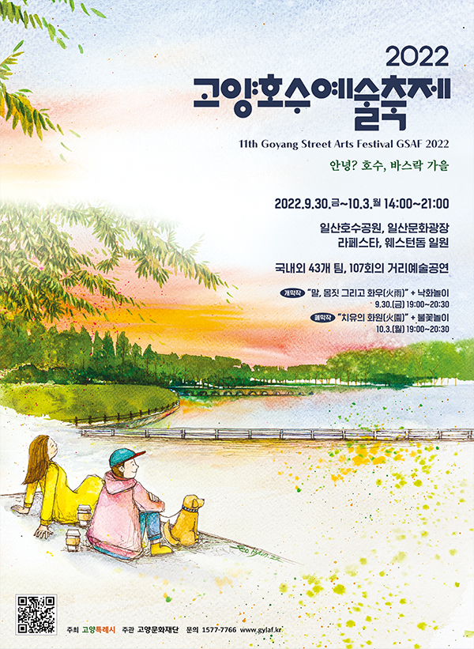

2022 GSAF
축제소개
축제일정
축제장소
오시는길
만드는 사람들
지난 GSAF
공연프로그램
개/폐막작
공식 초청작
자유 참가작
해외 초청작
특별 초청작
기획프로그램
특별기획 프로그램
버스커즈 스테이지
꼼지락 예술마당
고양호수마켓
커뮤니티
공지사항
Q&A
갤러리
자료실
CONTACT
나의 시간표
search

안녕? 호수, 바스락 가을
2022 고양호수예술축제
호수·거리·자연·사람이 어우러진 도심의 축제!
대한민국을 대표하는 거리예술 축제인 고양호수예술축제로
관람객 여러분을 초대합니다.
엄선된 국내외 초청작들과 자유 참가작은 물론
지역 예술가를 비롯한 고양버스커즈 퍼포먼스 팀들과 함께하는
특별 기획 프로그램까지!
2022년 고양특례시 원년을 맞아 더욱 풍성한 볼거리를 준비했습니다.
일산호수공원과 일산문화광장, 라페스타, 웨스턴돔에서
다채로운 예술로 채워지는 희망의 여정을 함께해주세요.